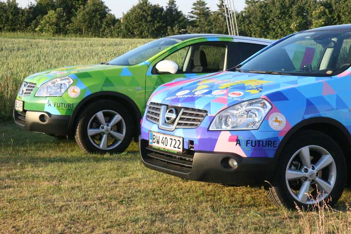
Noget chokerede har vi på TV set den brændte elbil på Norgesbåden. Så lad os straks slå fast at det ikke er Moto-Mundos. Vores grønne Qashqai Electric fra Afuture er på vej over Stillehavet, og den Blå står stadig i Sakskøbing. Grønne er en fantastisk elbil som har kørt os 13500 km gennem Norge, Sverige, Estland, Rusland, Mongoliet, Gobi-ørkenen og Kina. Den har klaret alle udfordringer og skal de næste måneder bringe os gennem USA og Europa. Vi har undervejs savnet rigtige ladestandere - men det må snart komme. Den gode nyhed er at det store Detroit Motor Show gerne vil have besøg af Grønne, så det er vi begyndt at glæde os til. Grønne vil blive landsat i San Francisco d. 3. december. Vi ankommer selv ugen før så vi kan tage imod den. Vores datter Ida og hendes lille Elliot vil køre med i Grønne den første måned indtil Dallas. Følg med her på hjemmesiden.
Nina og Hjalte
 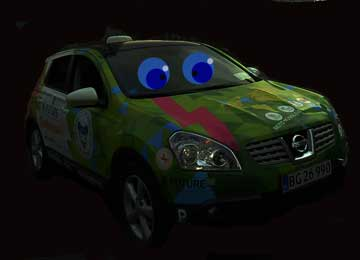
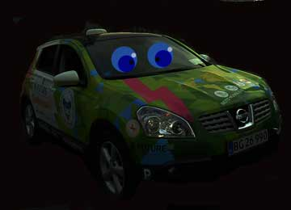
Jeg bliver næsten søsyg. Jeg står stablet sammen med hundredevis af containere på et kæmpestort skib. Derfor har jeg et stykke tid ikke kunnet ses på landkortet. Nogle tror måske at jeg stadig står på kajen i Shanghai? det gør jeg ikke. Men jeg længes efter at komme i land i San Francisco for igen få asfalt under dækkene. Der skal jeg møde de amerikanske elbil-venner som Hjalte og Nina har fået kontakt til på internettet.
Grønne
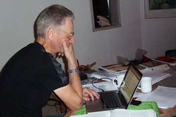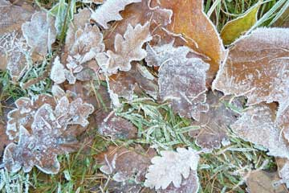
Vinteren er kommet tidligt i år. I haven er der is på guldfiskedammen, og der er frost på de sidste blade som blæser ned fra træerne. Inde i huset har vi travlt ved computerne. Vi kontakter elbilvenner i USA og skriver artikler til blade og sponsorer. Både Hjalte og jeg har været i USA før, men aldrig om vinteren. Det bliver spændende at se hvordan Grønne klarer sig på det vinterkolde amerikanske fastland.
Nina
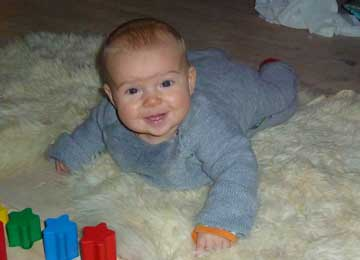
Vores datter Ida, hendes kæreste Hans og deres barn Elliot er kommet på besøg. Det er lykken at sidde med den lille på skødet, han er så sød og glad. Udenfor holder vores gamle røde 2CV, som vi nu bruger imens Grønne sejler til USA. Det er uhyggeligt så tit vi må hælde benzin på, og så dyrt det er. Og hvor den dog larmer! Vi lægger først rigtig mærke til det nu, hvor vi har vænnet os til at køre elektrisk.
Nina
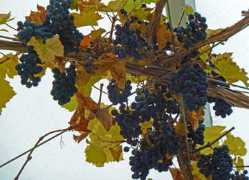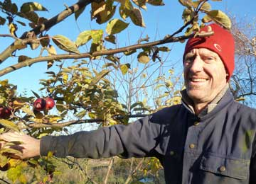
Så vågnede vi op i vores egen hus og blev straks overvældet af hjemlighedens krav. Opdagede en utæt slange bag opvaskemaskinen, som straks måtte ordnes. Samtidig gik vi i gang med at gøre efterårsrent i havestuen. En overvældende mængde vindruer og figner trængte til at blive plukket. I haven vælter æblerne ned fra træerne. I morgen må vi klare hjernerne og lægge en plan for alt det vi skal nå at ordne.
Nina
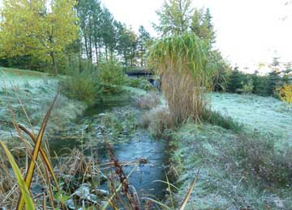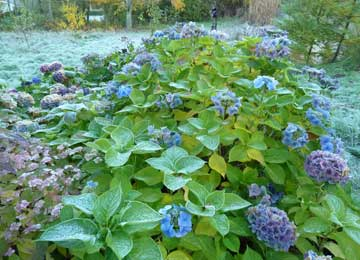
Tog lyntoget til Århus og ankom til Mørke i smukt efterårsvejr. Vores naboer tog imod os med kaffe, hjemmebagte boller og krydderkage. Senere gik vi op i huset, tændte pejsen og lagde os til at sove på sofaerne i stuen. Vi er her kun på gennemrejse. Om en måned rejser vi til USA for at fortsætte jordomrejsen med Grønne. Det føles lidt underligt at være på besøg hos sig selv, uden at være kommet hjem.
Nina
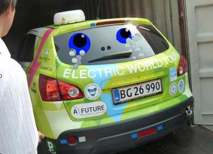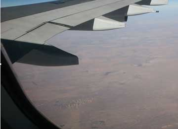
Inden vi fortsætter rejsen i San Francisco har vi et kort ophold i Danmark imens Grønne sejler over Stillehavet i en container. Tidligt om morgenen tog vi med et magnettog som kørte med mere end 300 km i timen. På få minutter var vi i Shanghais lufthavn. Efter en meget lang dag ankom vi om aftenen til København. Dejligt at se Emil og Ida og den lille Elliot på kun fire en halv måned. I Danmark har husene og byerne den normale størrelse - og slet ikke som i Kina hvor alting er ufatteligt stort. Undtagen kineserne, som til gengæld er så mange.
Nina
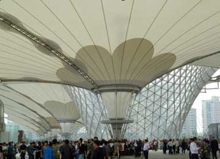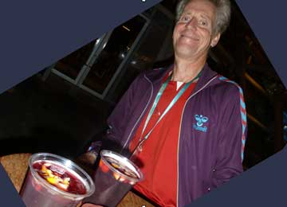
Vi gik på indkøb i Yaan Garden, en berømt sted med et gammelt tehus og nyere huse i gammel stil. Der var sort af mennesker. Kineserne stod i kø i restauranterne og butikkerne. Vi kastede os ud i malstrømmen og fik købt det vi var kommet for. Et kæmpestort marked gemte sig bag turistbutikkerne, men vi skyndte os hjem for at pakke. Fik også tid til et sidste besøg på EXPO for at sige tak og farvel til Lene og de andre i Den Danske Pavillion. Trængselen var større end nogensinde. Expo har besøg af en million mennesker - om dagen Det har været en fantastisk tid i Shanghai, og vi sluttede med en velfortjent Sangria i Den Spanske pavillion.
Nina

Vi fandt posthuset og fik sendt 13 kilo bøger, landkort, sommertøj og souvenirs af sted til Danmark. Resten kan forhåbentlig komme med os i flyveren. Tilbragte derefter dagen på EXPO. En sidste kraftanstrengelse, - var der noget vi gerne ville se? Vi besøgte USA´s pavillion, turkmenistan, Oceanien og Afrika. Hjalte købte et bælte, og jeg fik et armbånd af plasticstrå. Vi er næsten blevet afhængig af de daglige strabadser, hvor man til sidst bare håber at finde lidt mad eller en kop kaffe. Temaet bedre byer - bedre liv er der meget lidt focus på. Men EXPO har stor værdi for de millioner af kinesere som aldrig har været udenfor Kinas grænser. Det er meget populært at købe et EXPO pas, og få det stemplet i de forskellige landes pavillioner. For kineserne er det som at have været i udlandet.
Nina

Afuture er startet af Søren Ekelund, en ung dansk ingeniør, som har konstrueret den fantastiske elbil, som vi er kommet til at elske. Den har kørt os gennem frygtelig varme, regn, støv, storm og mudder og bragt os til Kina. Elbiler er en investering i fremtiden som andre lande også har fået øje på. De andre elbiler på EXPO var stadig prototyper. Danmark er endnu i front, men hvor er Danmarks støtte til firmaer som Afuture der satser på fremtiden? Er en mega-stor forretning ved at gå Danmarks næse forbi?
Hjalte og Nina